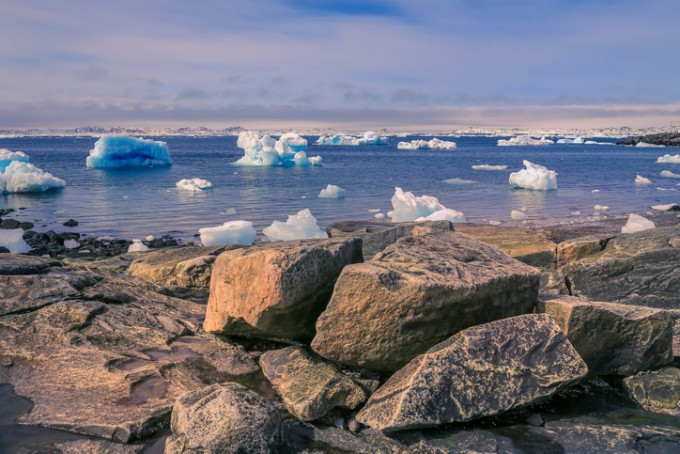

1. 기후 변화가 가져올 북극의 미래
"기후 변화가 지속된다면 2030년대 초반에는 여름철 북극 해빙이 완전히 사라질 가능성이 높습니다"
"빙하가 녹아내리면서 해수면 상승은 가속화되고, 북극 지역의 생태계는 심각한 변화를 겪을 것입니다"
영향 및 가능성
2. 생태계와 생물다양성의 변화
"빙하가 사라지면서 북극곰, 바다표범 등 빙하 의존 생물들의 서식지가 완전히 소멸할 위험이 있습니다"
"새로운 종들이 북극으로 이동하면서 생태계의 구조가 변화하고,
기존 종들은 멸종 위기에 처할 가능성이 있습니다"
영향 및 가능성
3. 자원 개발과 경제적 기회
"북극 해빙으로 인해 석유, 천연가스, 희귀 광물 자원의 접근이 용이해지면서
자원 개발이 더욱 활발해질 것입니다"
"북극 항로가 열리면서 물류 산업에서 새로운 기회가 창출될 가능성이 높습니다"

영향 및 가능성
이는 환경 파괴와 생태계 위협을 동반합니다
북극의 자원 개발은 장기적으로 생태계와 경제 모두에 악영향을 미칠 수 있습니다
4. 국제 협력과 지속 가능한 미래
"북극 지역은 국제적 협력 없이는 지속 가능성을 확보하기 어렵습니다.
북극 이사회 등 국제 기구의 역할이 더욱 중요해질 것입니다"
"기후 변화 대응과 환경 보전을 중심으로 한 공동의 노력이 이루어진다면,
북극의 미래는 긍정적으로 변화할 가능성도 있습니다"

영향 및 가능성
북극 생태계의 회복과 기후 변화의 속도 저감이 가능할 수 있습니다
전 세계적인 기후 행동을 강화하는 계기가 될 수 있습니다